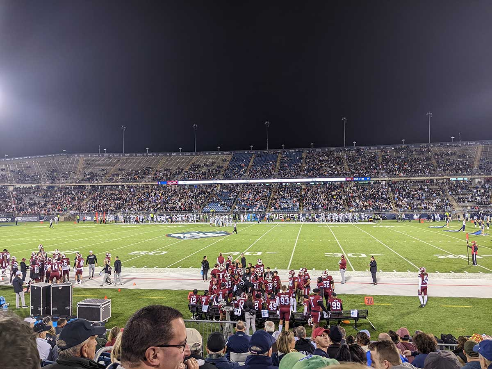

The late Rogers E. M. Whitaker is a personal hero of mine. Under the name E. M. Frimbo, the “World’s Greatest Railroad Buff”, he wrote numerous columns for the New Yorker about various train trips he taken, many in various out-of-the-way places. A number of these columns were collected in All Aboard with E. M. Frimbo, World’s Greatest Railroad Buff, of which I own several copies and is a charming read. Perhaps less well known is that Whitaker also covered college football for 30 years.
Back in 2008, I was working for Kalamazoo College (my alma mater) as a desktop engineer and, as I wrote at the time, “[i]n a fit of madness I promised the Athletics Department that I would attend a road football game this year.” Thus it was that several friends joined me amidst the remnants of Hurricane Ike for a football game in Rockford, Illinois, which Kalamazoo won 17-14. The story of driving through that weather has lost nothing in the telling over the years. A minor tradition was established, and we made similar trips in 2009 and 2010:
- September 13, 2008: Sam Greeley Field in Rockford, Illinois
- September 19, 2009: Burt Field in North Manchester, Indiana
- September 25, 2010: Benedictine Sports Complex in Lisle, Illinois
After that I let it lapse. I moved and changed jobs, although if anything my love of football deepened. In 2021 we sort of brought it back; Liz and I visited an old friend out in Des Moines who had been at those games in 2008-2010, and we drove out to Ron and Joyce Schipper Stadium in Pella, Iowa, to watch Kalamazoo get annihiliated by Central College.

This September, I mentally circled the early November game between UMass-Amherst and UConn. At the time, it seemed a real possibility both teams would enter the game winless. It was a rivalry. We had friends in the area. The Sickos Committee was abuzz about the potential SICKOS GAME OF THE CENTURY. I felt the old stirrings of mischief and merriment, and managed to convince four other people (besides Liz), most of whom weren’t really football fans, that this would be a suitable social activity.
Thus it was that six of us found ourselves at Pratt & Whitney Stadium at Rentschler Field in East Hartford, Connecticut, on a beautiful fall night, watching UConn and UMass battle it out in the “Battle of the U.” In some ways, this is egregious retroactive continuity on my part. The first four games are all DIII away games involving my alma mater, Kalamazoo College, and all played in September. This last one was an FBS matchup in November, in a real stadium.

On the other hand, this one also involved bringing people together for a football game, and at a venue that was new to everyone. We had a great time. The stadium wasn’t sold out by any means, but the official attendance was 23,430, and people were into it. The final, 27-10, doesn’t reflect that UMass did manage to move the ball and kept things close deep into the 4th quarter. At the half we met up with Pitt Girl from the Moon Crew discord, which was super cool.
We talked loosely with Pitt Girl about doing the Brickyard Brawl next year in Morgantown. I’m not sure I reconcile the spirit of the Frimbo Express with a proper Power 5 matchup, but it would be a new venue and a road trip. It’s also one of the little ironies of this venture that I’ve never actually taken the train to any of these games, and Amtrak doesn’t get closer to Morgantown than Connellsville, Pennsylvania…